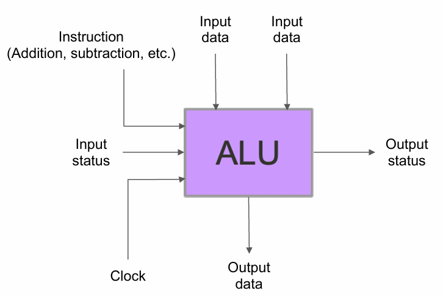
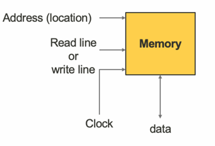

Lecture1
Computing Process - The User’s Point of View
The Input-Process-Output Model (IPO model)
graph LR
A[Input] --> B[Computing Process]
B --> C[Output]
B --> D[Data Storage]
D --> B
Basic process has three steps:
- Read input data
- Process data
- Write output data
Computing process
- Computer program that is being sequentially executed by a computer
Data storage
- Store data
- Retrieve data
Programmable computers
What is programmable computers
- Programming is putting instructions together meaningfully
Programmable computer can execute instructions
- Instead of executing a fixed process
Another composition of instructions, another process
Programming can be done by
- End-users (without real programming knowledge)
- Computer programmers
Programmability
- Degree of how a system can be programmed
Low programmability
- Some flexibility in adjusting the computing process
- Vacuum robots, vehicle navigation systems
High programmability
- Re-purposed to serve a larger range of processes
- Modern desktop computers, smartphones and tablets
How to achieve high programmability?
- A large amount of instructions available
- A high flexibility to compose and sequence the instructions
- Short time and little effort to re-program a system
What is programmable computers
- Programming is putting instructions together meaningfully
- Programmable computer can execute instructions
- Instead of executing a fixed process
- Another composition of instructions, another process
- Programming can be done by
- End-users (without real programming knowledge)
- Computer programmers
Components of programmable computers
Programmable enabled processes
graph LR
subgraph Input
A1[Data]
end
subgraph Processing
B1[Process] --> B2[Program]
B2 --> B3[Instructions]
B1 --> D1[Data Storage]
D1 --> B1
end
subgraph Output
C1[Data]
end
A1 --> B1
B1 --> C1
- Instruction execution
- An essential function of the programmable computer
- Data storage
- A function for storing the data before and after the instruction execution
- Program storage
- A function for storing the program in the programmable computer for instruction execution
- Inputting data
- Data (including program) that a computer receives
- Outputting data
- Data that a computer sends
Be a useful computing process
- MUST include input and output for interacting with the outside world
Major components of a programmable computer
- Arithmetic and Logic Unit (ALU)
- For instruction execution
- Memory system
- For data and program storage
- Input device
- For data input (including program) into the programmable computer
- Output device
- For data output from the programmable computer
Arithmetic and Logic Unit (ALU)
- Functional unit for instruction execution
- ALU accepts data and instructions
- ALU produces data output which is a result of instruction execution
- Fundamental building block of computing circuits (e.g. CPU, GPU)

- Most ALU has two data input ports
- Input data to be operated on, called operands
- ALU operation is controlled by the instruction port
- The instruction operated on the data presented at the input ports
- The code presented at instruction port mapped to a particular instruction
- ALU operation timing is controlled by the clock port
- A clock signal is provided to control when operations take place
Memory
- Functions of memory
- Retrieve data (Read)
- Store data (Write)
- Overwrite a previously stored data (Overwrite)

- Duplex data channel
- Read/write line
- Clock line
- Data operations involve a data unit
- The size of data unit varies: bit, byte
- Address to identify each data unit in memory
- Numbered 0 onwards
- Number of addresses determine the size of memory system
- Address specifies which data unit for the current operation